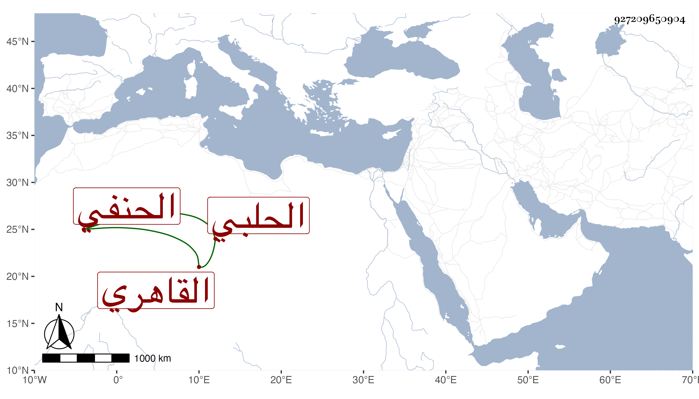

0902Sakhawi.DawLamic.ITO20230111-ara1.EIS1600.927209650904
Biography ID: 927209650904
445
عبد الرحيم بن أحمد بن موسى بن إبراهيم زين العابدين أبو الفضل بن الشهاب أبي العباس الحلبي الأصل القاهري الحنفي الماضي أبوه ويعرف بالحلبي . ولد تقريبا بعيد التسعين وسبعمائة واعتنى به أبوه فأسمعه على ابن أبي المجد والتنوخي والعراقي والهيثمي والابناسي والتقي الدجوي وسعد الدين القمني والحلاوي والسويداوي وابن الناصح والتاج بن الظريف والجمال الرشيدي وغيرهم الكثير ، ومما سمعه على الأول البخاري وعلى الثاني الموطأ ومسند الدارمي وعبدو الشفا مع الكثير من ابن حيان وكان يتصرف بأبواب القضاة غير صالح للأخذ عنه لكونه زوج المغنية ابنة السطحي وحالهما مشهور ولكن استجزته ، مات بعد الخمسين عفا الله عنه وإيانا .
